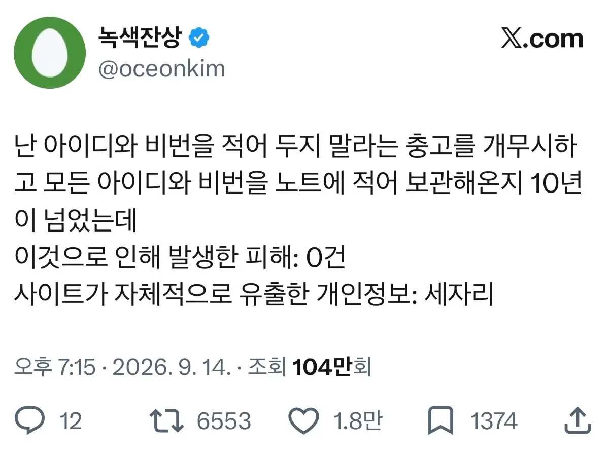

자아 이제 누가 보안전문가지?

자아 이제 누가 보안전문가지?
내가 유출 안되도 사이트가 알아서 유출해주지 ㅋㅋㅋ
후후 개드립은 안전하겠지?
누군가가 침입해 당신의 노트패드를 훔쳐서라도 당신의 비밀번호를 알아내려한다면
당신이 걱정해야할 건 비밀번호 따위가 아닙니다
"고무호스"
사유가 찾아보면 맨날 업뎃하기 귀찮아서 안함, 업뎃 깜박함. 인데 얘들 진짜 전문가 맞음?
마이너 패치 너무 자주 나옴
자주 하겠다고 해도 서버 재기동 일정 안 줌
보안팀 자체에 힘이 없음
이런 게 많긴함
귀찮은 것도 있고
보안팀이 존나 불쌍함.. 뭔 일 터지면 책임지지만 뭔 일 안터지면 발언권을 안줌 ㅠㅠ..
아 그렇구나
패치 업뎃 꼬박꼬박하는게 쉬운일이아님
정답노트 갖다바치면서 대소문자+숫자+특수부호+8자리이상은 왜 요구하는지 원ㅋㅋ
ㄹㅇㅋㅋ
지들 서버 비밀번호 1234, 0000 국룰
개인정보 유출할 때마다 손해배상 제대로 때렸으면 기업이 좆같이 보관했겠냐고ㅋㅋㅋㅋㅋ 해킹되면 안되니까 아날로그화라도 불사해서 지켰을걸?
중국산 제품들 백도어고 뭐고 다 피했더니 유출은 국내토종기업들이 다하구연~
1q2w3e..
비번은 반드시 특수문자 2개, 대문자 소문자 숫자 조합으로 본인도 존나 기억도 못하게 만드십시오
사이트 개인정보 - 히히 이랏샤이마세
비밀번호는 특수문자 영문 대소문자를 각각 1개 이상 포함하시고 2개이상 연속 또는 중복되는 숫자또는 영문은 사용할 수 없습니다. 12~20자리로 설정하십시오
로그인 전 nprotect 안랩 키보드보안 뭐보안 이거보안 저거보안 설치하십시오
설치된 프로그램을 구동하기위해 윈도우를 재시작합니다
다운로드된 파일이 최신버전이 아니므로 업데이트 합니다 모든 원도우 창이 닫힙니다.
로그인되었습니다.
공동 금융인증서 연결을 위한 프로그램 설치를 합니다
결제를 위해 은행사 프로그램 설치를 해야합니다
진짜 토나옴
비밀번호 입력 후 : 키보드 보안이 활성화되지 않았습니다. 실행 후 다시 로그인하여 주십시오
그 말 한 새끼들 비번 외우기 귀찮아서 지껀 0000으로 해놓음